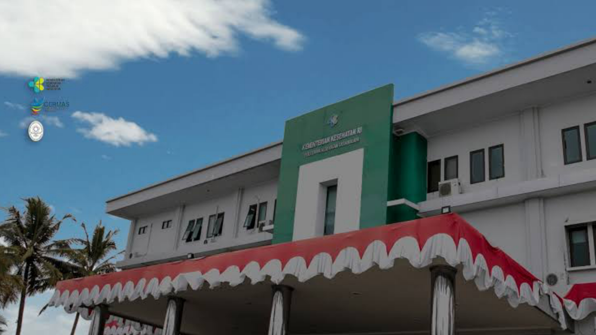

POLTEKKES KEMENKES TASIKMALAYA
Politeknik Kesehatan Kementerian Kesehatan di Tasikmalaya atau yang biasa disingkat dengan Poltekkes Kemenkes Tasikmalaya
adalah sebuah institusi pendidikan tenaga profesional di bidang kesehatan di bawah naungan Kementrian Kesehatan Republik Indonesia.
Poltekkes Tasikmalaya beralamat di jalan Cilolohan No. 35, Tasikmalaya.
Pada tahun 1970-an berdiri Sekolah Penjenjang Kesehatan di Tasikmalaya,
kemudian ditingkatkan menjadi Sekolah Perawat Kesehatan (SPK) yang memiliki Program Studi D-I,
Program Pendidikan Bidan (PPB) dan Sekolah Pengatur Rawat Gigi (SPRG).
Pada tahun 1993 Sekolah Perawat Kesehatan (SPK) Tasikmalaya ditingkatkan statusnya menjadi Akademi Keperawatan (AKPER),
Akedemi Kebidanan (AKBID) dan Akademi Kesehatan Gigi (AKG).
Pada tanggal 16 April 2001 dengan Surat Keputusan Menteri Kesehatan RI Nomor 268/MenKes-Kesos/SK/IV/2001
secara resmi 3 Akademi yang ada di Tasikmalaya dan 2 Akademi di Cirebon digabungkan menjadi satu institusi pendidikan kesehatan dengan nama
Politeknik Kesehatan Kementerian Tasikmalaya.
Rekam Medis Dan Informasi Kesehatan
POLTEKKES KEMENKES TASIKMALAYA
Institusi pendidikan kesehatan Program Diploma III Rekam Medis dan Informasi Kesehatan (RMIK)
adalah menghasilkan tenaga yang kompeten di bidang Perekam Medis dan Informasi Kesehatan yang memiliki integritas
kepribadian yang tinggi serta mempunyai kualifikasi untuk melakukan profesi di bidang Perekam Medis dan Informasi Kesehatan dalam suatu sistem pelayanan kesehatan masyarakat meliputi
rumah sakit umum dan khusus, rumah sakit bersalin, praktek dokter dan bidan, klinik, puskesmas, Dinas Kesehatan, institusi pendidikan, konsultan, dan hal lain yang relevan